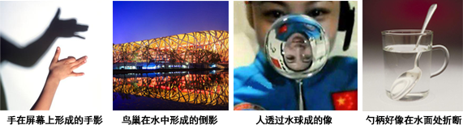

2018年北京市中考物理试题 · 选择题 第1、2、3、4、5题
1. 下列物品中，通常情况下属于导体的是
A. 塑料安全帽 B. 布手套 C. 橡胶鞋 D. 钢尺
2. 图1所示的光现象中，由于光的反射形成的是

A B C D
3. 下列用电器中，利用电流热效应工作的是
A. 电暖气 B. 计算器 C. 电视机 D. 笔记本电脑
4. 下列实例中，为了增大压强的是
A. 书包带做的较宽 B. 图钉帽做得面积较大
C. 大型平板车装有很多车轮 D. 石磨的磨盘做得很重
5. 下列做法中符合安全用电要求的是
A. 用电器电线绝缘皮破损了仍继续使用 B. 在未断开电源的情况下更换灯泡
C. 在家庭电路中安装空气开关或保险丝 D. 在高压线附近放风筝